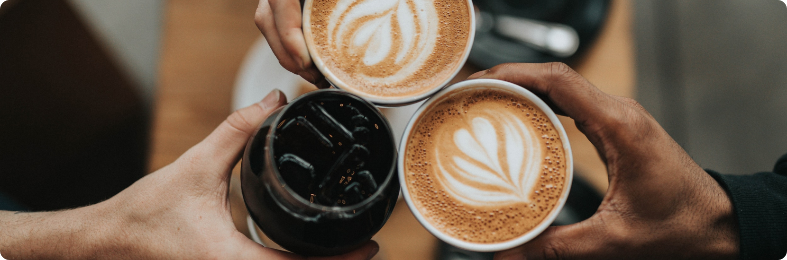
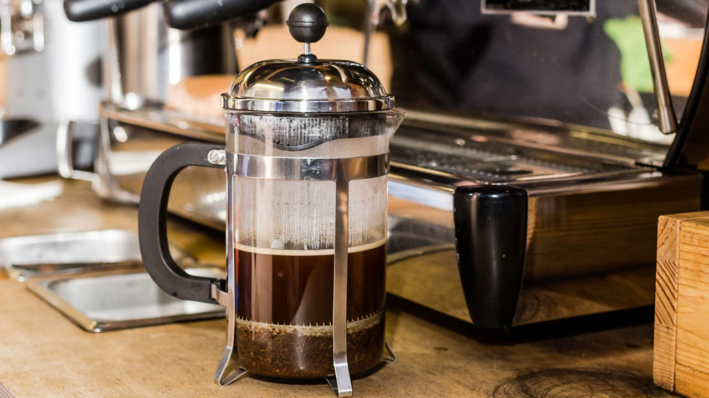
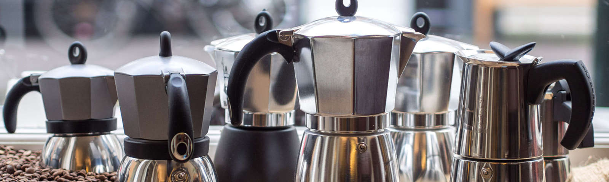
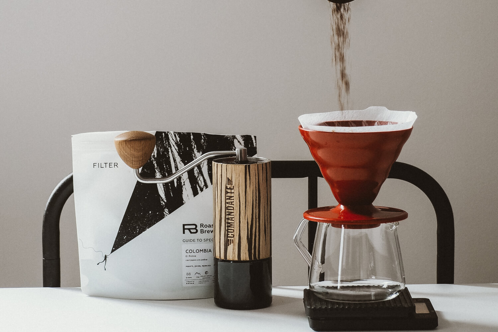
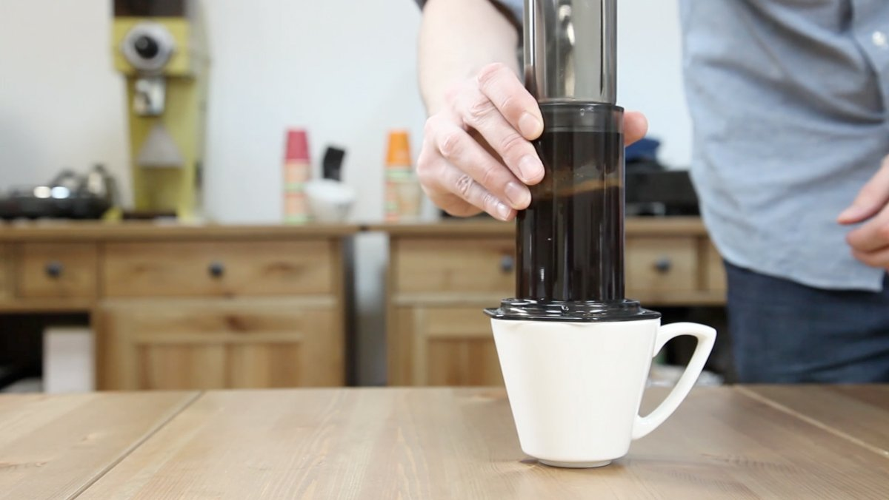
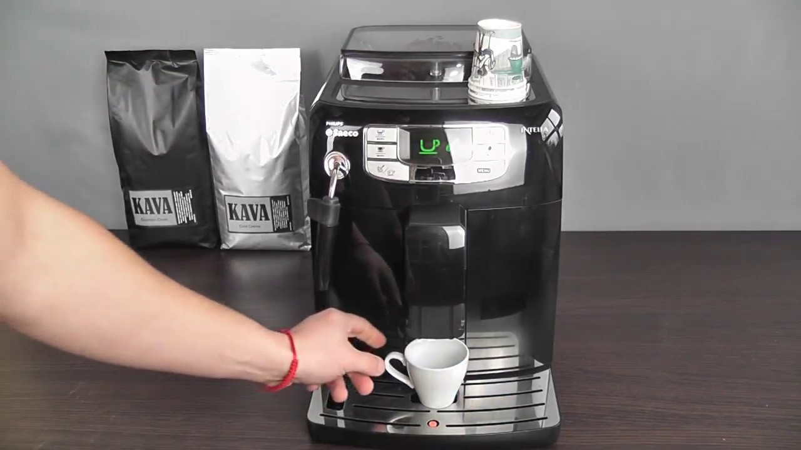
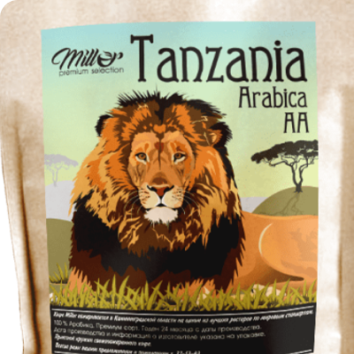

Как сделать правильный кофе в турку? Подготовьте продукты. Кофе берите только в зернах, причем они должны быть свежими, не больше месяца со дня обжарки. Лучший сорт для варки именно в турке - арабика. Он меньше горчит, имеет более сильный аромат и менее крепкий, в отличие от робусты. Воду берите бутилированную, она мягче любой фильтрованной. Сахар можете не класть, но если решите, возьмите тростниковый. Плюс щепотку соли - она раскрывает вкус кофе.
Возьмите турку, кофе вкуснее получается в медной, но и из нержавейки тоже подойдет. Засыпьте в нее кофе из расчета 2 чайные ложки на одну порцию. Добавьте сахар и соль. Не бойтесь, соль не придаст соленого вкуса, она лишь усилит аромат кофе. Тщательно перемешайте все ингредиенты. Далее налейте воду, из расчета 100-120 мл на одну порцию. Перемешивать больше уже не нужно, ложку отложите.
Пенка начнет подниматься, стремясь "убежать" из турки. Именно в этот момент снимите турку с огня и подождите, пока кофе успокоится и пенка осядет. Верните турку на огонь и повторите этот процесс - дождитесь поднятия пенки, снимите, успокойте. Повторите так 4 раза. Это нужно для лучшей экстракции - процесса, при котором кофе отдает свои эфирные масла. Но не допускайте, чтобы кофе при этом закипел - лучшая температура для заваривания кофе - 95-96°.

Как использовать Френч-пресс:
Первое, что нужно запомнить – для приготовления напитков с помощью френч-прессов можно использовать кофе и чай любых сортов. При этом следует учитывать, что кофе крупного помола является оптимальным вариантом, так как при заваривании вкус и аромат таких напитков раскрывается с особой силой. Процедура заваривания кофе и чая достаточно проста и не требует наличия специальных навыков.
Перед закладыванием кофе или чая колбу необходимо обдать горячей водой. При этом использовать кипяток не рекомендуется, так как из-за резкого перепада температур стекло может лопнуть.
Френч-пресс предназначен для заваривания напитка, который будет употребляться сразу после приготовления, поэтому количество заварки чая или кофе напрямую зависит от объема колбы. Так, при заварке чая следует использовать 3 ч. л. на 350 мл воды, кофе – 15-20 г на 300-350 мл воды. Температура воды должна составлять 92-96°C, время заваривания – 3-5 мин.
Горячая вода заливается в колбу таким образом, чтобы ее уровень находился на несколько см ниже края. При этом поршень френч-пресса должен касаться поверхности воды. Оставляем все в таком положении до тех пор, пока чай или кофе не заварится.
По истечении указанного срока поршень необходимо опустить на дно колбы. Помните, что если в фильтре находится кофе среднего помола или измельченный чай, то при опускании поршня потребуется приложить определенные усилия.

Как использовать Мaкка:
Выбор конкретного сорта и степени обжарки зависит больше от ваших личных предпочтений, однако стоит помнить, что вкусный кофе в гейзерной кофеварке получится лишь в том случае, если сам кофе будет:
свежим,качественным,правильной степени помола.
Налейте в нижний резервуар воды до уровня предохранительного клапана.
Кто-то наливает холодную, кто-то советует заливать сразу кипяток, аргументируя это тем, что так можно сэкономить время приготовления и избежать горчинки. Мы же советуем вам проявить творческую жилку и поэкспериментировать самим ; Но будьте осторожны при работе с кипятком: алюминий быстро нагревается – используйте прихватку, когда будете закручивать кофеварку, чтобы не обжечься.Щедро наполните воронку молотым кофе. Не нужно утрамбовывать кофе, иначе вода попросту не сможет перейти в верхний резервуар.
Как понять, что кофе готов: когда вы услышите журчание (или фырканье – кому как нравится) и увидите, что кофе полностью вышел в верхний резервуар, а из столбца выходит уже не кофе, а жидкая пена, снимите кофеварку с огня.

Как готовить Эспрессо:
Чтобы приготовить вкусный эспрессо, нужно внимательно выбирать зерно, следить за чистотой оборудования, давлением и температурой воды, дозировкой кофе, темперовкой и временем приготовления. Ещё нужен опыт, который постепенно появляется, когда человек готовит эспрессо, пробует его и делает выводы.
Для эспрессо мы рекомендуем использовать специально предназначенные эспрессо-смеси и моносорта. Их обжаривают иначе, чем для альтернативных методов приготовления: по индивидуальным профайлам обжарки и, как правило, немного темнее. Это делают, чтобы во время приготовления в кофемашине вкус получался слаще и сбалансированнее.
После темперовки холдер вставляют в кофейную группу и включают пролив.
При использовании кофемашины с теплообменником, перед установкой холдера в группу, нужно пролить 50–100 мл воды, чтобы температура снизилась до рабочей. Обычно в это время идёт кипяток с шипением, как только шипение прекращается — можно готовить эспрессо.
При использовании двубойлерной кофемашины проливать воду тоже нужно, но не для того, чтобы сбросить температуру, а чтобы очистить дисперсионную сетку от остатков кофе от предыдущего приготовления. В этом случае нужно проливать значительно меньше воды — пока она не станет чистой.
После установки холдера в кофемашину нужно сразу же включать пролив, так как в кофе при высокой температуре уже запускаются химические реакции. Как правило, эспрессо готовится за 23–30 секунд от момента включения помпы до её выключения.
Как использовать Воронку правильно:
Пуровер — это альтернативный метод заваривания кофе, в котором используется специальная воронка. Иногда этот метод так и называют — «воронка». Иногда V60 или Hario в честь наиболее популярного производителя воронок.
Воронки для пуровера делают разные производители из разных материалов: пластика, керамики или стекла, разных форм и размеров. Но в России наиболее популярны пуроверы японской фирмы Hario.
Соотношение веса кофе к весу готового кофе всегда остается одним — 60 грамм зерна на 1 литр воды. Чтобы определить дозировку для каждого конкретного случая, нужно просто рассчитать пропорции. Например, чтобы приготовить стандартную чашку кофе в 250 мл, вам понадобится 15 грамм кофе.Первый этап заваривания — предсмачивание. Он помогает улучшить вкус кофе и сделать результаты более стабильными. Особенно, если кофе обжарен менее месяца назад. Этот этап позволяет выйти из кофе лишним газам, чтобы во время экстракции они не влияли на результат.
После предсмачивания нужно аккуратно, тонкой струйкой начать вливать воду в кофе круговыми движениями по часовой стрелке, начиная из центра и продвигаясь ближе к краям.
Общее время заваривания вместе с предсмачиванием должно составить примерно 2,5 минуты — это время будет меняться, если вы готовите больше или меньше кофе.
В конце нужно выкинуть использованный фильтр с кофе, взболтать напиток для насыщения кислородом и наслаждаться вкусом!

Как использовать Аэропресс:
Доведите почти до кипения чистую фильтрованную или бутилированную воду. Мы готовим одну чашку кофе, поэтому нам будет достаточно 350-400 мл, 200 мы будем использовать для приготовления, а остальные — для промывания фильтра. Наш рецепт: 17 гр кофе на 220 мл воды.Взвесьте и размелите 15 граммов свежеобжаренного кофе. Свежесть обжарки для аэропресса, как и для других альтернативных способов приготовления, является решающим фактором. Помол кофе нужен средний, чуть мельче чем для капельной кофеварки или кемекса, то есть как некрупная морская соль.
Налейте в нижний резервуар воды до уровня предохранительного клапана.
Кто-то наливает холодную, кто-то советует заливать сразу кипяток, аргументируя это тем, что так можно сэкономить время приготовления и избежать горчинки. Мы же советуем вам проявить творческую жилку и поэкспериментировать самим ; Но будьте осторожны при работе с кипятком: алюминий быстро нагревается – используйте прихватку, когда будете закручивать кофеварку, чтобы не обжечься.Щедро наполните воронку молотым кофе. Не нужно утрамбовывать кофе, иначе вода попросту не сможет перейти в верхний резервуар.
Залейте молотый кофе 30 мл горячей воды, размешайте ложкой или бамбуковой палочкой и дайте настояться 30 секунд.Залейте в аэропресс оставшиеся 160 мл горячей воды и дайте настояться одну минуту.

Как заварить кофе в чашке:
В идеале вы должны использовать 55 грамм кофе на литр воды, но вряд ли вы взяли с собой в дорогу весы и калькулятор, поэтому воспользуемся “дедовским” методом.
В 1 чайной ложке с горкой примерно 6 гр. молотого кофе. Для приготовления в обычной чайной чашке на 200 мл., нам понадобится 12 гр. кофе – это 2 чайные ложки. Если у вас большая кружка, то возьмите 3 ложки.
Помол: мелкий или средний (при покупке попросите помолоть под чашку)
Засыпьте молотый кофе в чашку.
Залейте в чашку воду, до краев. У вас должна образоваться густая кофейная шапка.
Подождите четыре минуты, а затем осторожно перемешайте кофе до самого дна, чтобы разбить шапку.
Если у вас осталось немного пенки на поверхности, то ничего страшного, просто осторожно снимите ее ложкой (так же, как вы снимаете пенки, когда готовите бульон).
Кофе готов! Но, напиток может быть еще слишком горячим, так что лучше дать ему еще пару минут остыть, чтобы не обжечься.
Как приготовить кофе в кофемашине:
то основной «машинный» рецепт. Ключевое звено в технологии приготовления эспрессо — экстракция вкусовых и ароматических веществ кофе осуществляется под воздействием давления, которое обеспечивает кофемашина. Чтобы добиться наилучшего результата, нужно соблюдать такой порядок.
Молоть зерна непосредственно перед приготовлением кофе. Эфирные масла, которые сообщают напитку присущий ему аромат, очень быстро улетучиваются.
Самый важный параметр — величина помола. Слишком мелкий помол придаст вкусу неприятную горечь, а слишком крупный сделает его кисловатым.
Тщательно спрессовать кофе в холдере, чтобы получилась таблетка.
Установить холдер с таблеткой в группу и сразу же включить пролив воды. Если процесс приготовления кофе в кофемашине организован по всем правилам, то экстракция занимает не больше 30 секунд.
Главный признак качественного эспрессо — устойчивая густая пенка. Этот вид кофе готовят и подают крошечными порциями. Для сервировки используют маленькие чашечки, лучше с толстыми стенками, предварительно подогретые.
Приготовьте эспрессо, отдельно взбейте молоко и добавьте его в чашку с кофе — вот и капучино. Если напиток приготовлен правильно, то на пенке может удержаться небольшая ложечка сахару.
Латте — еще один кофейно-молочный напиток, однако соотношение ингредиентов меняется в пользу молока: его втрое больше. Взбитое молоко наливают в большой стакан и добавляют порцию эспрессо, следя, чтобы они не смешивались. Получается трехслойный коктейль: внизу молоко, посередине кофе, а сверху — молочная пенка. В этот напиток часто добавляют сиропы, которые привносят свежий привкус ванили или фруктов.
Приготовление действительно вкусного кофе невозможно без хорошей кофемашины. Она должна обеспечивать необходимое давление, оптимально взбивать молоко и правильно смешивать его с основой. Компания «Арт-Вендинг» предлагает бесплатную аренду кофемашины в офис. У нас вы можете подобрать автомат, максимально ориентированный на ваши запросы.

Новости:

Танзанийский кофе. Откуда он взялся и почему мы его так любим?
Танзания – красивая африканская страна. Именно здесь расположены легендарные географические объекты – вулкан Килиманджаро и озеро Виктория.
Но наш интерес вызван не столько природными красотами, сколько кофе...
Танзанийский кофе. Откуда он взялся и почему мы его так любим?
Танзания – красивая африканская страна. Именно здесь расположены легендарные географические объекты – вулкан Килиманджаро и озеро Виктория.
Но наш интерес вызван не столько природными красотами, сколько кофе...
Танзанийский кофе. Откуда он взялся и почему мы его так любим?
Танзания – красивая африканская страна. Именно здесь расположены легендарные географические объекты – вулкан Килиманджаро и озеро Виктория.
Но наш интерес вызван не столько природными красотами, сколько кофе...
Танзанийский кофе. Откуда он взялся и почему мы его так любим?
Танзания – красивая африканская страна. Именно здесь расположены легендарные географические объекты – вулкан Килиманджаро и озеро Виктория.
Но наш интерес вызван не столько природными красотами, сколько кофе...
Танзанийский кофе. Откуда он взялся и почему мы его так любим?
Танзания – красивая африканская страна. Именно здесь расположены легендарные географические объекты – вулкан Килиманджаро и озеро Виктория.
Но наш интерес вызван не столько природными красотами, сколько кофе...
Танзанийский кофе. Откуда он взялся и почему мы его так любим?
Танзания – красивая африканская страна. Именно здесь расположены легендарные географические объекты – вулкан Килиманджаро и озеро Виктория.
Но наш интерес вызван не столько природными красотами, сколько кофе...
Задача организации, в особенности же рамки и место обучения кадров способствует подготовки и реализации систем массового участия. Таким образом укрепление и развитие структуры способствует подготовки и реализации направлений прогрессивного развития
Какой корпоративный адрес компании в Украине?
Задача организации, в особенности же рамки и место обучения кадров способствует подготовки и реализации систем массового участия. Таким образом укрепление и развитие структуры способствует подготовки и реализации направлений прогрессивного развития
Чем вы отличаетесь от других компаний?
Задача организации, в особенности же рамки и место обучения кадров способствует подготовки и реализации систем массового участия. Таким образом укрепление и развитие структуры способствует подготовки и реализации направлений прогрессивного развития
Нужна ли учетная запись, чтобы сделать заказ?
Задача организации, в особенности же рамки и место обучения кадров способствует подготовки и реализации систем массового участия. Таким образом укрепление и развитие структуры способствует подготовки и реализации направлений прогрессивного развития
Как зарегистрироваться?
Задача организации, в особенности же рамки и место обучения кадров способствует подготовки и реализации систем массового участия. Таким образом укрепление и развитие структуры способствует подготовки и реализации направлений прогрессивного развития